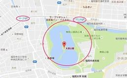

アクセス
Map

桜おまつり
駐車場について
会場周辺の道路は大変混雑します。駐車場は台数に限りがありますので、公共交通機関をご利用ください。
※第1駐車場・
第2駐車場の福岡城さくらまつり期間以外の駐車場営業時間についてはこちら
収容可能台数…139台（第１駐車場67台第2駐車場72台）
料金：１時間150円
入庫時間（福岡城さくらまつり期間中）
第１駐車場：入庫6:30〜22:00 まで※出庫は24時間可能(4月1日以降は5:30〜)
第2駐車場：入庫8:00〜22:00 まで※出庫は24時間可能
タイムズ福岡城三の丸駐車場
収容可能台数…256台（一般241台・バス15台）
料金：
一般…1時間200円（当日最大料金400円）
バス…60分1000円駐車後24時間最大料金3000円
入庫時間…7:00〜21:00まで
場所：ohori park fukuoka
Ph.no.:+090-0000000
PAGE TOP